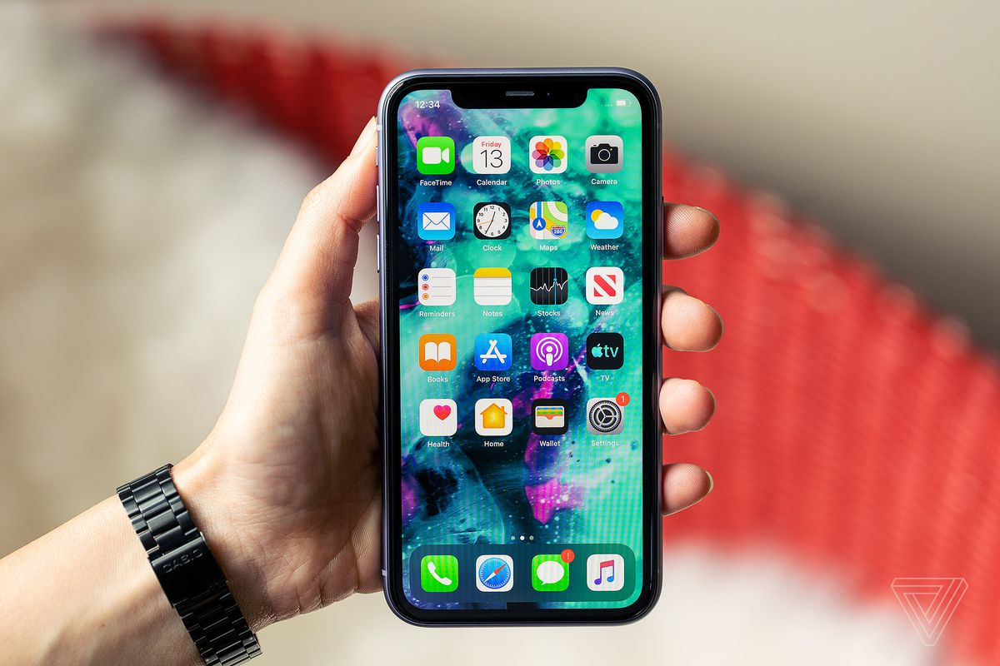
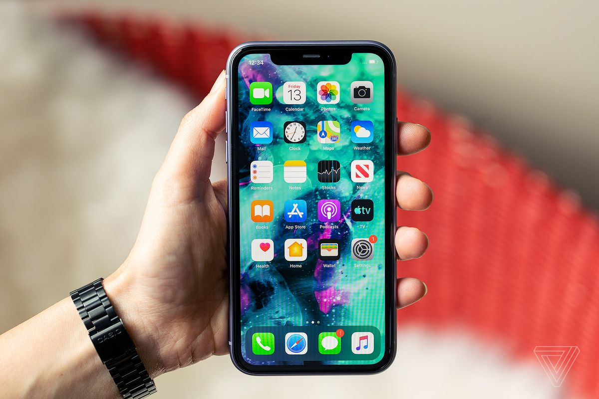
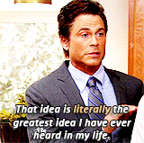
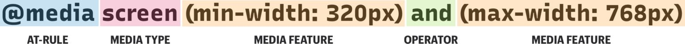

Responsive Design
Redi School Munich - Spring 2021
Recap
- Flexbox
- Grid
Once upon a time...
There weren't many devices, websites were designed for computers only
 
 AND SO MANY MORE!
Something had to change!
People started to create another website for mobile screens
But it wasn't!
After lots of trial and errors and many other "great" ideas
Responsive Web Design
came to life!
What is Responsive Web Design?
Is an approach to web design that lets our website adapt to different screen and window sizes
Mobile traffic makes up for more than 51% of all traffic
If your site is not responsive, it is not gonna make it
The pillars of RWD
- Flexible Grid Layouts
- Flexible Media
- Media Queries
Flexible Grid Layouts
- We don't target every single device, we let it flow
- Flexbox and Grid
- Capable of dynamically resizing to any width
- Relative units
Flexible Media
- Images, videos, iframes need to adapt as well
max-widthandsrcset
Flexible Images, the problem
- Different images for different devices
- Larger images in smaller screens is not ideal
- High resolution screens
- Art direction, resolution switching
img {
max-width: 100%;
}
More on Responsive imagesSrcset
- srcset gives the browser a choice
- Each item in the list contains the path to an image and the density of that image provided as a multiple (e.g., 1x, 2x, 3x…).
- Great for fixed width images, not ideal otherwise
- Density is a resolution switching case
Width descriptors
- We list the resolution of the image
- But this might not be enough, we need to give more information to the browser
The sizes attribute
- Media condition is similar to media queries
- If the viewport is 480 pixels wide or smaller, the image will be 100% of the viewport width
The picture element
- Contains a series of source child elements followed by the required img element
- The media attribute tells the browser that this source should only be used if the viewport is larger than or equal to what we specify
Media Queries
They allow us to target the certain conditions and apply CSS when those rules match
viewport is larger than 320px
the device is a touchscreen
Media Queries
@media media-type and (media-feature-rule) {
/* CSS rules go here */
}
/* When the browser is at least 600px and above */
@media screen and (min-width: 600px) {
.element {
/* Apply some styles */
}
}
Media Queries
@media Is a css rule that let us target different conditions
Media type is what we are targeting, the most common being screen
Other values include all and print
Media features test a single specific feature of the target device, most common are min-width and max-width
Other values include orientation or hover
The operator let us combine different media features to make a more specific rule
We can use and, not and or
Mobile First
Until now we have only focused on doing things for desktop
Mobile first design is a design strategy that says when you create a website or app, you should start sketching and prototyping the smallest screen first and work your way up to larger screens. Essentially, it’s about delivering the right user experience to the right device.
Let's see it in action

The viewport meta tag
The browser's viewport is the area of the window in which web content can be seen
device-width is the width of the screen in CSS pixels at a scale of 100%.
The initial-scale property controls the zoom level when the page is first loaded
Key takeaways
- Design the mobile website first and work your way up to the desktop version.
- Stay fluid; use some @media queries to restyle things as needed.
- Implement a responsive images solution
Homework
Take the previous homework and make all necessary changes so it is responsive in every size
Questions?